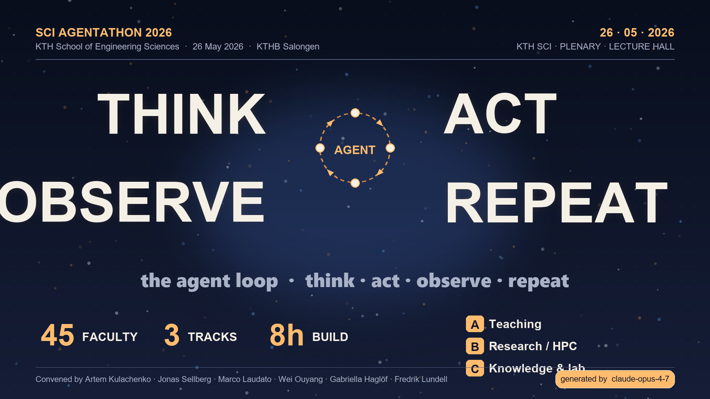

Inferred from the program, prep materials, and 42 free-text survey responses.
The day's centrepiece is a 16:00 live-demo block — one demo per sub-team. Sub-teams are told they "converge on a demoable result", not "complete the exercise". Faculty arrive with named projects (MEMEX, lab monitoring, eISP filler) and want something they can show colleagues on Wednesday.
Participant instructions require Claude Desktop, Claude Code, and (if no Claude sub) Codex; Antigravity is "useful in Track B if you already have a workflow built around it". Many participants want a side-by-side feel for which CLI works for their workflow.
Multiple respondents (#27, #37) say they're attending to prepare a course or department retreat on AI. The plenary's "Agents = Brain + Memory + Tools + Loop" framing is engineered exactly for that hand-off — and that's why the slogan is the loop itself.
Hover a row for emphasis. Mouse-over the time column to see what kind of block it is.
Click a tab to see what each track has prepared, who's running it, and what sub-teams will build.
Every survey free-text answer, hand-categorised by best-fit track. Click any row to expand.
A point forecast with reasoning, derived from the survey content + room affordances.